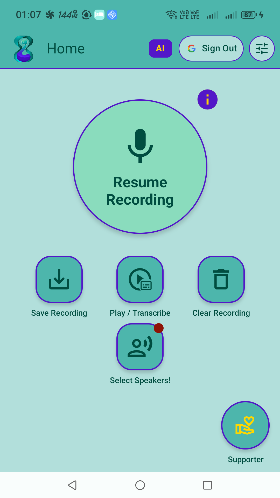
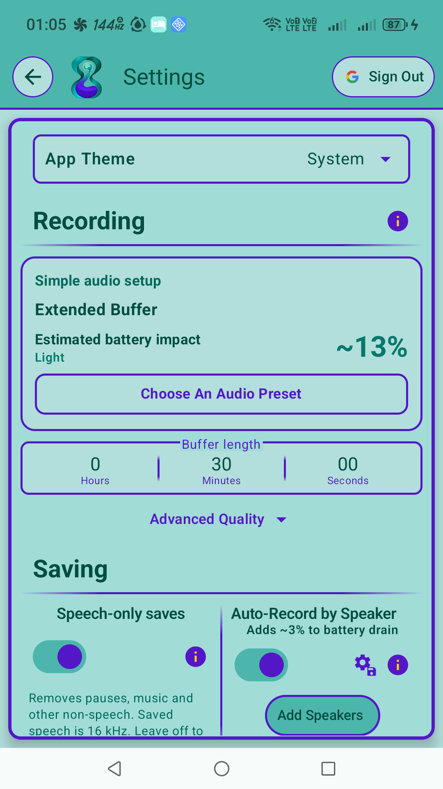
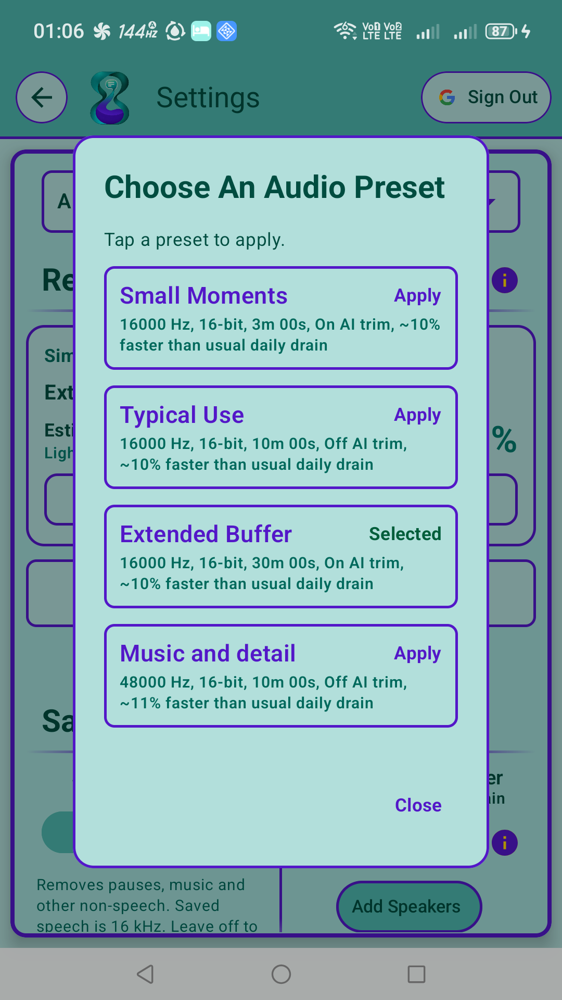
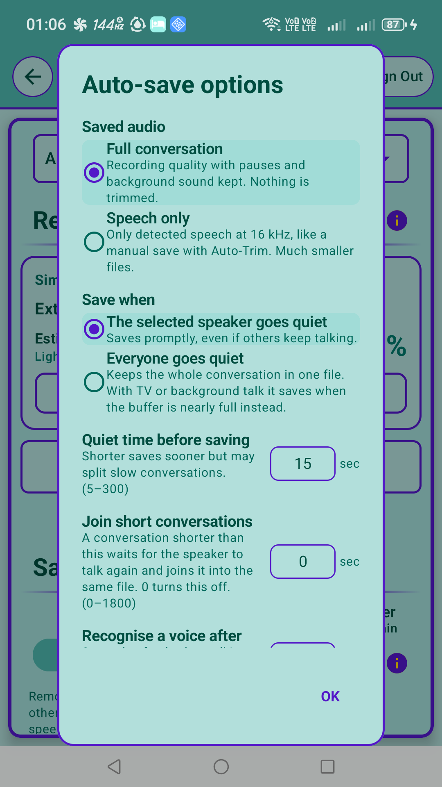
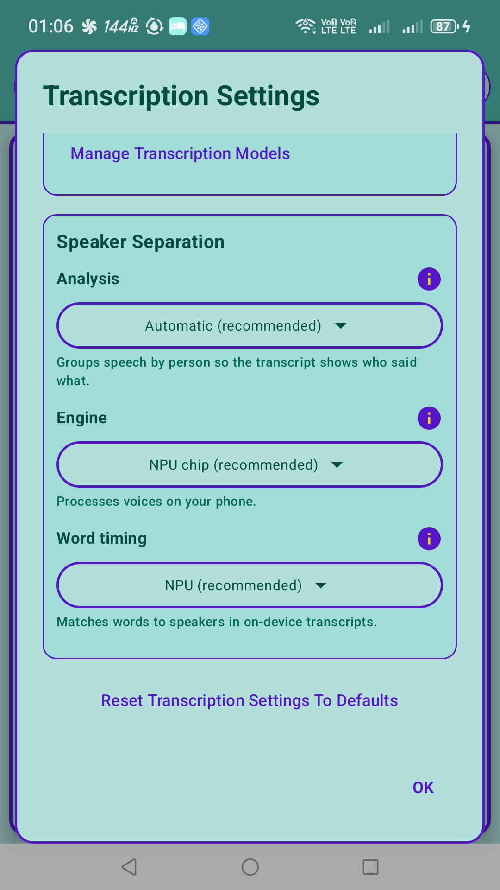
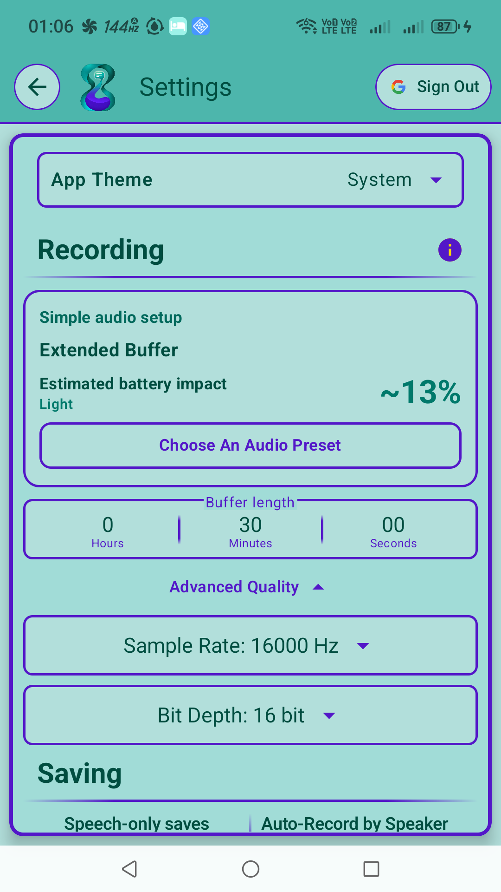
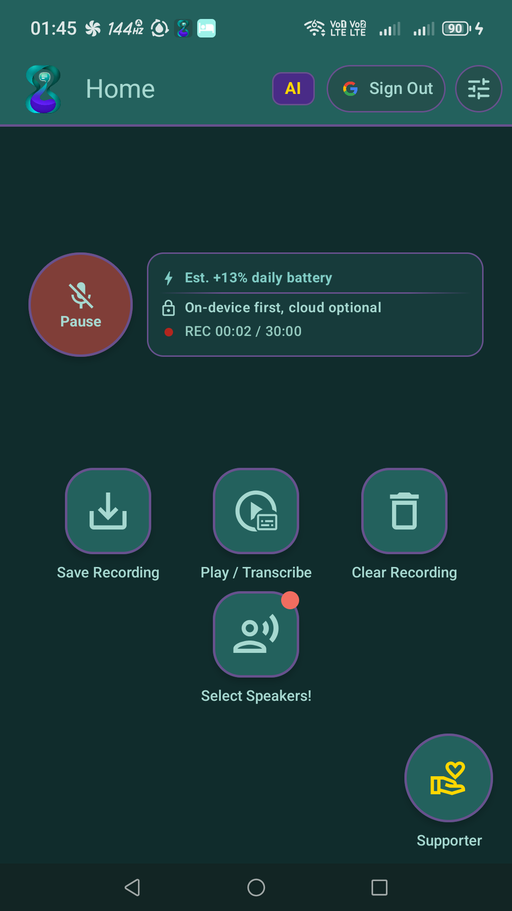

Catch the moment.
Even after it happened.
Auto Record Moments keeps a rolling audio buffer on your Android phone. Start recording, then save the conversation, idea or sound you want to keep from the recent past.
Choose a quick preset or make it your own: recording quality, buffer duration, voice-triggered saving and transcription all have settings you can tune.
This site describes the latest app developed in the private AutoRecordMomentsPro repository. Features depend on your installed version and phone; older releases may not include everything described here.
More than a record button
- Save the recent past. Keep a rolling buffer and save from the app or recording notification.
- Auto-save by speaker. Enroll a voice and choose when its conversations should be saved.
- Keep the sound you want. Preserve the full recording or trim away non-speech when saving.
- Turn conversations into text. Use on-device or cloud transcription with speaker labels. Available acceleration and models depend on your phone.
Your recordings, your settings
Choose App theme at the top of Settings: follow your system theme, or keep the app in Light or Dark mode. The choice is saved on your device.
Start with Small Moments, Typical Use, Extended Buffer or Music and detail. Then adjust sample rate, bit depth and buffer duration, with estimates for memory, file size and battery impact.
Fine-tune voice recognition, quiet time before saving and whether short conversations join into one file. Choose transcription language, speaker separation and local or cloud processing.
Explore customization and get started →
See the current app
Captured from the version 3.0.0 development build on 8 October 2026 (UTC). Available options vary by device.














Choose how your audio is processed
On-device processing works offline after the required models are downloaded. Cloud transcription uses credits and uploads the selected audio. With cloud fallback, the app asks before uploading; Always Cloud uses your selected cloud model. Signing in also synchronizes settings and speaker profiles, including speaker samples where present.
Read what is stored, shared and retained
Account deletion and support
In the current app, open Settings and select Delete Account Permanently in the account section. Saved recordings on your phone are not removed by account deletion, and limited payment and abuse-prevention records remain.
Full deletion instructions and retained-data details
Need help? Email mortenfjordchristensen@gmail.com.